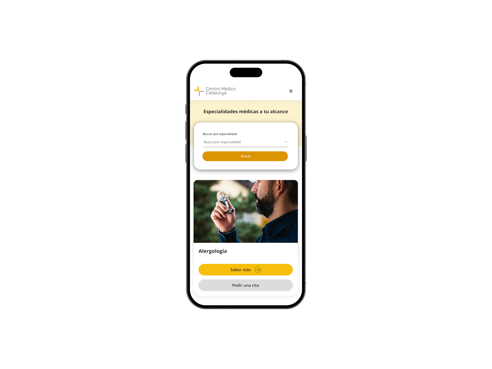

Centro Médico Catalunya
Bridging 30 years of medical care with modern patient UX
HEALTHCARE REDESIGN/ UX strategy/ DIGITAL CONVERSION


Modernizing a 30-year medical institution with an intuitive portal built for patient trust and direct scheduling.
Product
Redesigning a local medical institution into a modern, accessible healthcare portal optimized for patient conversion, clear appointment scheduling, and multi-specialty discovery.
Challenge
The legacy website was outdated, visually fragmented, and difficult to navigate. Key patient actions—such as booking consultations, finding specialties, or verifying insurance providers—were buried under dense text, low-contrast UI, and unoptimized layout hierarchy, causing user friction and missed appointments.
Solution
A streamlined fusion of clinical trust and CRO-driven UX. I restructured the information architecture, established a modern digital visual system, designed intuitive specialty filtering, and integrated seamless conversion triggers connecting patients directly to booking tools, the patient portal, and instant WhatsApp support.
Projected Impact based on design benchmarks
-30s
Time to find a specialist
Structured 3-way filters replaced tedious manual page scrolling.
-40%
Drop-off rate on appointment forms
Prominent sticky CTAs and direct portal links streamlined the booking funnel.
3x
Increase in insurance coverage visibility
Dedicated partner logos and clear search upfront reduced patient uncertainty.